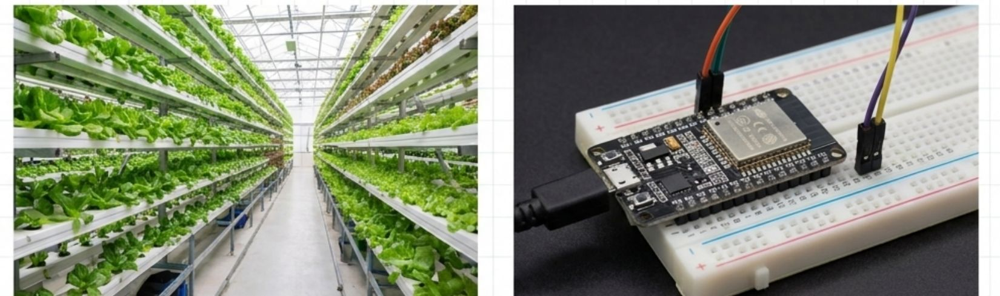
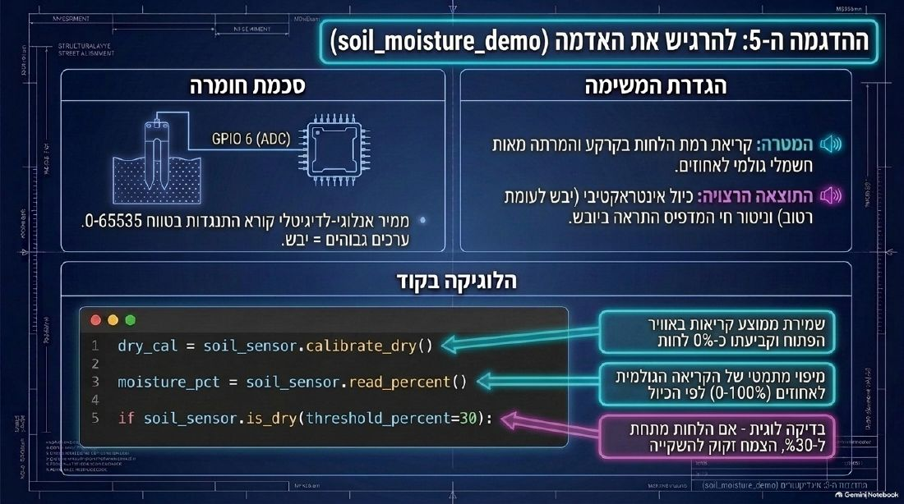

חיישנים · הקופסה החכמה · אם...אז · חיבור ראשון
קודם הגוף שלנו, אחר כך המכונה
🔁 בשיעור 5 שאלנו:
אם הצמח לא מרגיש טוב, איך נדע לפני שרואים בעיניים? מדדנו ביד. אבל מה קורה ב-2 בלילה, כשאף אחד לא בכיתה?
👀 לגוף שלנו יש חושים: העיניים רואות אור, העור מרגיש חום, האצבע מרגישה אם משהו רטוב.
🤖 גם למכונה אפשר לתת «חושים». כל אחד מהם מרגיש דבר אחד ומודד אותו.
גררו כל חוש שלנו אל «החוש» של המכונה שעושה אותו דבר
💡 חיישן אור
🌡️ חיישן חום
💧 חיישן לחות אדמה
✅ כל החושים במקום! +5 🌿
🏷️ יש לזה שם!
«חוש» של מכונה נקרא חיישן. היום נחבר את חיישן לחות האדמה, כי הכי חשוב לשתיל לדעת אם יש לו מים.
❓ מה זה חיישן?
ה«מוח» הקטן שמקשיב לחיישנים

מקבלת מידע מהחיישן
בודקת מה לעשות
מדליקה נורית, מצפצפת
🏷️ יש לזה שם!
קופסה חכמה כזו נקראת בקר. לבקר שלנו קוראים ESP32. הוא קטן כמו כף יד, ועולה כמה עשרות שקלים.
⚡ עשיתם את שיעור 5.5? שם קראנו לו «הקופסה החכמה». זה אותו דבר!
❓ החיישן אמר לבקר: «האדמה יבשה». מה הבקר עושה עם זה?
בלי לכתוב קוד. רק גוררים 2 בלוקים.
☔ אם יורד גשם, אז לוקחים מטריה.
🚦 אם הרמזור אדום, אז עוצרים.
🧠 גם הבקר עובד עם כללים כאלה. בואו נבנה לו כלל אחד!
יש כאן 4 בלוקים. רק 2 מתאימים. גררו אותם למקום.
🧪 בודקים את הכלל
לחצו על שני הכפתורים ותראו מה הבקר עושה
🔕
...
משקים, השמש מייבשת, ומסתכלים על המספר
🪴
אדמה לחה
💧 כמה מים יש באדמה
📟 המספר שהחיישן שולח לבקר:
40,000
❓ כשהאדמה יבשה, המספר של החיישן...
קוראים את המספר ומגלים מה הבעיה
🥀
העלים של השתיל נבולים.
החיישן שולח: 58,000
❓ מה הבעיה, ומה עושים?
🇮🇱 רעיון ישראלי
Phytech (פייטק)
כשעץ צמא, הגזע שלו מתכווץ קצת, כל כך קצת שהעין לא רואה. Phytech, חברה ישראלית מקיבוץ יד מרדכי, שמה על הגזע חיישן קטן שמרגיש את זה.
ככה החקלאי יודע שהעץ צמא לפני שהעלים מצהיבים. וכשמשקים רק כשצריך, חוסכים כל כך הרבה מים שקשה לספור.
❓ איך Phytech יודעים שעץ צמא, לפני שרואים בעיניים?
עם הערכה האמיתית, בקבוצה
🔌 3 החוטים של חיישן הלחות:

🛡️ 5 כללי בטיחות
💧 הכוסות על השולחן, רחוק מהלוח. את החיישן מכניסים לאדמה רק עד הקו.
📋 משימות הקבוצה (לחצו כשסיימתם):
המספרים מופיעים במחשב, בחלון של התוכנה Thonny. מעתיקים אחד מכל כוס.
📡 ספרו את המספרים למורה, ללוח הנתונים של הכיתה.
הקופסה החכמה כבר מרגישה
אפשר לכתוב משפט קצר. אפשר גם בערבית. 🙂
✨ נשמר בדרכון!
בתערוכה בסוף השנה, אולי בפרויקט שלכם יהיה חיישן.
מה הייתם רוצים שחיישן יבדוק בשביל הצמח שלכם?
🔮 שאלה לשיעור 7:
"האדמה התייבשה. הבקר צריך להדליק נורית אדומה ולצפצף. איך נגרום לו לדעת לעשות את זה בעצמו?"
🌿 עלים בשיעור 6:
0
מתוך 50 עלים